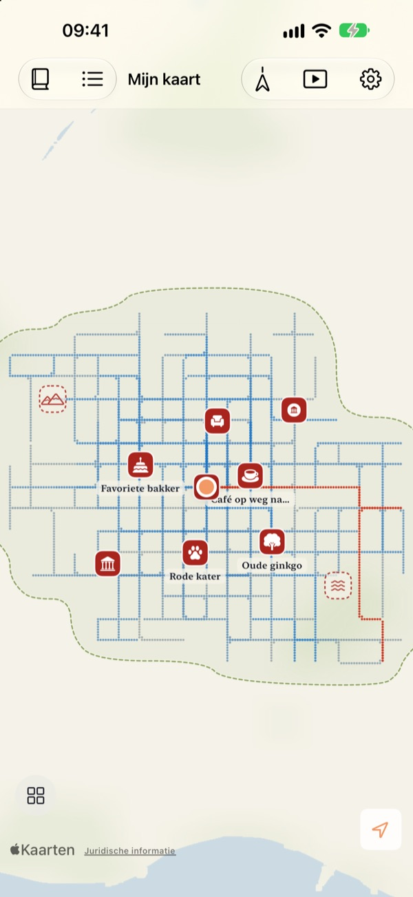
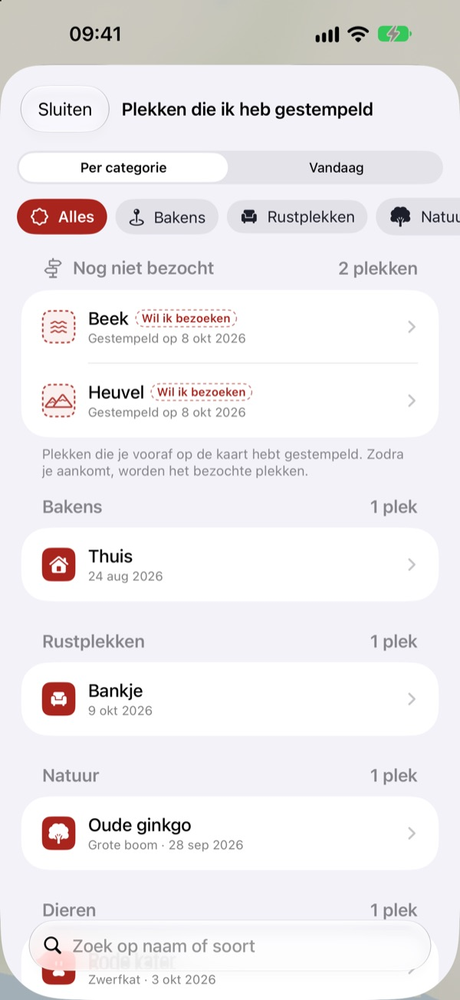
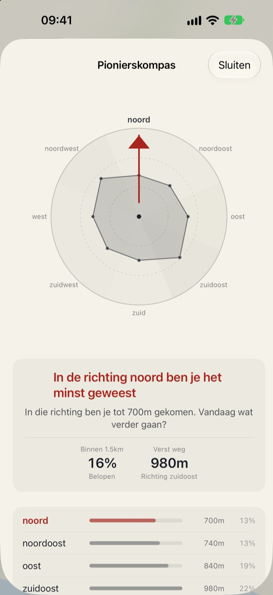
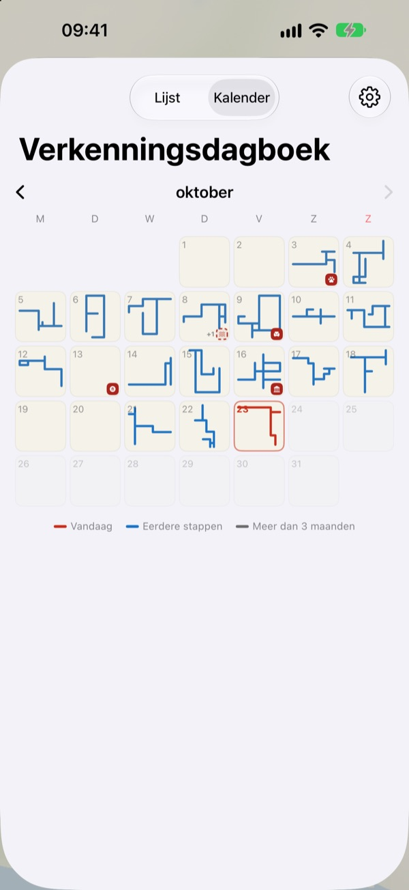

Een kaart die alleen
te voet inkleurt
Hij begint als een leeg vel papier. Alleen waar je loopt, kleurt hij punt voor punt in, en honderd keer dezelfde straat maakt hem niet breder. Wil je dat de kaart groeit, neem dan een nieuwe weg.
Alle functies gratis, zonder advertenties.

Maak een wandeling
Sleep met je vinger of muis over het papier om te lopen. De blauwe punten zijn straten waar je al eerder liep. Kijk hoe De weg van vandaag verandert als je ze opnieuw loopt of juist een nieuwe kant op gaat.
Elke dag dezelfde straten?
Een stappenteller telt stappen, maar vraagt nooit waar ze heen gingen. Van huis naar het station en terug vult de ring prima, terwijl het zijstraatje om de hoek jarenlang een raadsel blijft. Buktu Buktu telt alleen wegen die je voor het eerst loopt. Een mooie reden om vandaag een blokje om te gaan.
Stempel plekken waar je was en waar je heen wilt
Stempel de plek waar je staat, of houd ergens op de kaart je vinger ingedrukt. Er zijn 212 stempels om uit te kiezen, gesorteerd per categorie.
Een stempel waar je nog nooit hebt gelopen, blijft een plek om te bezoeken en wordt een bezochte plek zodra je er echt komt. Fotografeer een uithangbord en de achtergrond wordt weggeknipt, zodat het bord als sticker op die plek komt te staan.

Volgende wandeling: de richting waar je het minst kwam
Het Pionierskompas verdeelt je omgeving in acht richtingen en wijst de richting aan waar je het minst bent geweest.
Voetafdrukken van vandaag zet de plekken waar je vandaag stilstond op volgorde, met hoe ver je ertussen liep.

Elke dag laat een vorm achter
De kalender tekent de vorm van elke dagwandeling in plaats van een getal. Houd een dagboek bij met tekst en foto’s, en zie hoeveel van elke wandeling nieuw terrein was.
Kies een periode en kijk in een video hoe je kaart wordt getekend. Die video kun je exporteren.

In drie stappen aan de slag
- 1
Open de app
Er vouwt zich een leeg vel papier open.
- 2
Sta locatie toe
Kies ‘Altijd’ en zet ‘Beweging en fitness’ aan, zodat wandelingen ook worden vastgelegd als de app dicht is.
- 3
Ga op pad
Hoe onbekender de straat, hoe meer de kaart groeit.
Zo lees je de kaart
- Rode punten
- waar je vandaag liep
- Indigo punten
- eerdere stappen, donkerder waar je het vaakst komt
- Grijze punten
- plekken waar je al meer dan drie maanden niet bent geweest. Ze vervagen, maar verdwijnen nooit
- Gestippelde stempel
- een plek uit ‘Wil ik bezoeken’. Die wordt bezocht zodra je er bent
- Wegen die ik heb getekend
- totale lengte van alle wegen die je voor het eerst liep
- De weg van vandaag
- hoeveel van de wandeling van vandaag nieuw was
- Alles samen bekijken
- in Instellingen; opent het Pionierskompas, Voetafdrukken van vandaag en de film van je kaart
Kies tussen de inktkaart en de Getekende kaart.
Alle functies zijn gratis
Gratis
- Een kaart die alleen te voet inkleurt, met bijhouden van nieuwe wegen
- 212 stempels en stickers van uithangborden
- Pionierskompas en Voetafdrukken van vandaag
- Kalender en dagboek met tekst en foto’s
- Video van je kaart die wordt getekend exporteren
- Widgets voor beginscherm en toegangsscherm
- Synchronisatie via iCloud tussen apparaten
Steun de ontwikkelaar
- Geef via Instellingen een kleine fooi, als je dat wilt
- Een fooi ontgrendelt niets. De app blijft precies hetzelfde
Geen advertenties, geen abonnement.
Vragen
Ik heb gelopen, maar er staat niets op de kaart.
Ga naar Instellingen > Buktu Buktu > Locatie, kies ‘Altijd’ en zet ‘Beweging en fitness’ aan. Dan wordt er ook vastgelegd als de app dicht is. Heb je in de instellingen van de app de batterijbesparende registratiewijze gekozen, open de app dan voordat je vertrekt. Onnauwkeurige locaties worden bewaard, maar niet getekend.
Worden ritten met auto of metro vastgelegd?
Nee. De app gebruikt bewegingsgegevens en snelheid om alleen lopen en hardlopen te tekenen, en laat stukken die op een voertuig lijken weg. Heel af en toe kan dat misgaan.
Ik loop elke dag dezelfde route en de kaart groeit niet.
Dat is de regel. Alles binnen 30 m van waar je al liep, telt als dezelfde weg, dus alleen nieuwe wegen tellen mee voor Wegen die ik heb getekend. Ook de stoep aan de overkant telt als dezelfde weg. Het Pionierskompas laat zien waar je het minst bent geweest.
Wordt mijn locatie ergens naartoe gestuurd?
Niet naar de ontwikkelaar. Je stappen, stempels, dagboek en foto’s blijven op je apparaat en in je eigen privé-iCloud, en de ontwikkelaar kan ze niet zien. Anonieme gebruiksstatistieken bevatten nooit coördinaten, dagboekteksten, plaatsnamen of foto’s. Om coördinaten om te zetten in plaatsnamen worden diensten van Apple Kaarten gebruikt. Lees meer in het privacybeleid hieronder.
Gaan mijn gegevens mee naar een nieuw apparaat?
Ja. Log op het nieuwe apparaat in met hetzelfde Apple Account en laat iCloud aan staan, dan komen je stappen, stempels, dagboek en foto’s mee.
Hoe verwijder ik een stempel of foto?
Stempels verwijder je in de lijst Plekken die ik heb gestempeld, en een dagboekfoto verwijder je door je vinger erop te houden. Een manier om al je wegen en dagboekberichten in één keer te wissen, staat op de planning.
Hoe voeg ik de widget toe?
Houd je vinger op het beginscherm, tik op ‘Wijzig’ > ‘Voeg widget toe’ en kies Buktu Buktu. Voor het toegangsscherm houd je je vinger erop en tik je op ‘Pas aan’. De widget op het beginscherm toont de vorm en lengte van de weg van vandaag, die op het toegangsscherm de afstand van vandaag.
Wat heb ik nodig?
Een iPhone met iOS 17.0 of nieuwer.
Hoe neem ik contact op?
Stuur feedback via de instellingen van de app of mail ons op het adres hieronder. We antwoorden zo snel mogelijk.
Vragen of feedback? Mail naar leeo@kakao.com.